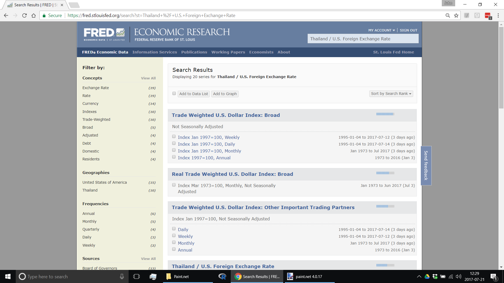
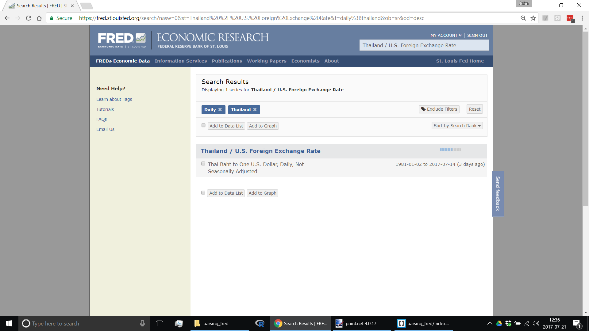

Published: 2017-07-21
How to download and parse FRED data files.
The website of the Federal Reserve Bank of St. Louis, known as FRED, provides an incredible trove of free time series data. How can a programmer download and parse these data?
If you are coding in Javascript you might expect to use CORS or JSONP to access the data; however, your expectations are likely to be frustrated. When I last corresponded with the webmaster in late 2016 I was informed that FRED does not support CORS or JSONP, though they hope to provide support in the future. I am on the FRED email list and I have not noticed any announcements about this since then.
Under these circumstances my preferred method of accessing FRED data is to download and parse it using R. Besides being the language of choice for data analysis, R is super-convenient for downloading and processing data files.
Each FRED data file has a Series ID that you can find by searching FRED. For example, if you are interested in the daily Thailand / US foreign exchange rate, enter "Thailand / US" in the FRED search box. The search box will suggest "Thailand / U.S. Foreign Exchange Rate". Select that and various time series are displayed. [Click on the screenshots below to see the original web pages.]
In the left-hand column click on "Thailand" and on "Daily" and the relevant time series appears on the right.
Click on it to exhibit the chart. There you will note that the Series ID for the Thai Baht / US Dollar daily exchange rate is DEXTHUS.
For a given Series ID the data file lives at the following URL:
https://fred.stlouisfed.org/data/SERIES_ID.txt
If FRED data were plain vanilla CSV files, downloading and parsing the data could be accomplished in one line of R code by applying the R function read.csv to the above URL. However, FRED data files are slightly complicated. They have introductory text preceding the data, and the number of lines taken up by the text varies from one data file to another. For example, here is the beginning of the daily Thai Baht / US Dollar foreign exchange rate file:
Title: Thailand / U.S. Foreign Exchange Rate
Series ID: DEXTHUS
Source: Board of Governors of the Federal Reserve System (US)
Release: H.10 Foreign Exchange Rates
Seasonal Adjustment: Not Seasonally Adjusted
Frequency: Daily
Units: Thai Baht to One U.S. Dollar
Date Range: 1981-01-02 to 2017-07-14
Last Updated: 2017-07-17 4:31 PM CDT
Notes: Noon buying rates in New York City for cable transfers payable in
foreign currencies.
DATE VALUE
1981-01-02 20.6611
1981-01-05 20.6611
1981-01-06 20.6611
[...]
The introductory material shown above occupies 12 lines. In the monthly Baht/Dollar file the introductory material occupies 27 lines. For 1-Month LIBOR the introductory material occupies 31 lines. And so on. The point is that if we are going to parse these files we can't simply skip the first N lines, because N varies from file to file.
Herewith a small sampling of FRED data pages:
If you click on these you'll observe something that is consistent. All the data files have two columns of data and the columns are labelled DATE and VALUE. This provides a hook to skip the introductory material and go straight to the data. We can do this with the following R command:
#Find the line containing the data headers.
idx = grep('^DATE[ ]+VALUE$', txt)
The preceding regular expression seeks a line that begins with DATE, is followed by one or more space characters, and ends with VALUE. It places the line number in idx, short for "index". With this line number in hand we are in a position to skip the introductory material and parse the data.
There is one other subtlety that we must address. Because FRED data files begin with multiple lines of text they must be downloaded as text files, not as rows and columns of data. In R a text file is imported as a character vector, that is, an array of strings. In the present context, once we are past the introductory material each string will contain a date and a value, separated by a space. How can we conveniently turn these lines of text into data? The solution is to convert the character vector into a file-like object—known as a "connection"—that can be read by the read.table function; read.table will then do the heavy lifting of converting the text to data. The function used to convert a character vector to a connection is textConnection. Its use is illustrated below:
txt = readLines(url) #A character vector.
#Find the line containing the data headers.
idx = grep('^DATE[ ]+VALUE$', txt)
stopifnot(length(idx) == 1) #Should be unique.
#Transform to data frame.
conn = textConnection(txt)
dfr = read.table(conn, skip=idx, na.strings='.')
close(conn)
The read.table function specifies na.strings='.'. This is another thing that is consistent across FRED data files, viz, that missing data are indicated by a period.
We are now in a position to subject the data frame (dfr in the code shown above) to data analysis.
A full program for downloading FRED data and transforming it to a data frame, optionally saving the data frame to disk, and returning the data frame to a calling program is exhibited below. The program can be run from the R GUI or from the command line.
comment("
fred_download.r:
Download the FRED data file with the indicated Series ID and transform it to a data frame.
Optionally save the data frame to disk.
Return the data frame.
To run from the command line:
Rscript fred_download.r series_id
")
fred_download = function(series_id, save=TRUE) {
#series_id: A FRED series ID. Example: A939RX0Q048SBEA (Real gross domestic product per capita).
#save: If TRUE, save the data to disk as a CSV file. The file is named 'series_id.csv'.
#URL template. Replace XXX with series_id.
urlx = 'https://fred.stlouisfed.org/data/XXX.txt'
url = sub('XXX', series_id, urlx)
#The data are preceded by explanatory text.
#The number of lines of text varies across Series ID.
#Consequently, it is necessary to begin by reading the url as a text file.
txt = readLines(url) #A character vector.
#Find the line containing the data headers.
idx = grep('^DATE[ ]+VALUE$', txt)
stopifnot(length(idx) == 1) #Should be unique.
#Transform to data frame.
conn = textConnection(txt)
dfr = read.table(conn, skip=idx, na.strings='.')
close(conn)
names(dfr) = c('DATE', 'VALUE')
#The 'read.table' function should have automatically parsed the VALUE field as numeric or integer.
#The call to mode covers both of these possibilities.
stopifnot(mode(dfr$VALUE) == 'numeric')
#Convert the DATE field from character to Date.
dfr$DATE = as.Date(dfr$DATE)
#Save to disk.
if (save) {
file = paste(series_id, '.csv', sep='')
write.csv(dfr, file=file, row.names=FALSE)
}
#Return the data frame.
return(invisible(dfr))
}
#If run from the command line user must provide the Series ID as argument.
#Example command line invocation: Rscript fred_download.r DEXUSEU
if (!interactive()) {
series_id = commandArgs(trailingOnly=TRUE)
stopifnot(length(series_id) == 1)
fred_download(series_id)
}
Copyright (C) 2017, John Van Praag